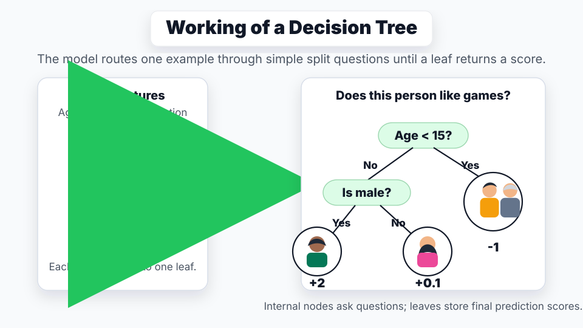

🌳 Decision Trees决策树
🌳 Decision Trees
Decision trees from Lecture 8 classify by asking a sequence of simple questions. Training greedily chooses splits that reduce label uncertainty, most often using information gain.
1. Concept Understanding
A decision tree represents a function by a tree-structured set of rules. Internal nodes store split rules, edges represent rule outcomes, and leaf nodes store final predictions.
For classification, a leaf usually predicts the majority class among training examples that reach it. For regression, a leaf usually predicts the mean target value in that region.
For continuous features, this course uses axis-aligned threshold rules such as $x_j\ge\tau$. These splits carve feature space into non-overlapping box-shaped regions. The learning problem is to choose both the split rules and the tree structure.
2. Plain-English Explanation
A tree is a flowchart. Start at the root, answer a yes/no question, move left or right, and repeat until a leaf tells you the label.
The training algorithm asks: which question makes the children less mixed than the parent? A perfect question sends each class into its own branch.

3. Core Intuition
Entropy, Gini, and classification error are all impurity measures. They are low when a node is pure and high when labels are mixed.
Information gain is uncertainty reduction: parent impurity minus weighted child impurity. Because finding the globally smallest tree is NP-complete, practical tree learning uses a greedy split-by-split heuristic.
4. Key Equations
What it does. Entropy measures how mixed the labels are inside a node. Pure nodes have entropy 0; evenly mixed nodes have higher entropy.
What it does. Gain is parent impurity minus the weighted impurity left in the children. Good splits make children much purer than the parent.
What it does. Squaring rewards dominance. If one class is near 1, $\sum_c p_c^2$ is large and impurity is low.
What it does. If a leaf predicts the majority class, all non-majority examples are mistakes. This formula is exactly that leftover fraction.
What it does. The split asks one yes/no question: is feature $j$ at least the threshold?
5. Worked Examples
If a parent has 10 examples of each class, its binary Gini impurity is $1-0.5^2-0.5^2=0.5$. If a split creates two pure children, both child impurities are 0, so the gain is 0.5.
If both children still have a 50/50 class mix, each child has the same impurity as the parent. The weighted child impurity equals the parent impurity, so information gain is 0.
For a six-point 2D dataset, start by computing the parent entropy from class counts. Then enumerate integer-threshold rules like $x_1\ge5$ and compute $IG=I(D)-\sum_j |D_j|I(D_j)/|D|$. The best root split is the rule with maximum gain.
6. Problem-Solving Tips
Compute the parent entropy first. Then enumerate each allowed feature-threshold rule, compute the weighted child impurity and information gain, pick the rule with largest $IG$, and assign each child leaf by majority class.
7. Common Mistakes
- Using unweighted average child impurity instead of weighting by child size.
- Forgetting that $\log 0$ terms are treated as 0 through the limit $p\log p\to0$.
- Assuming deeper is always better. Deep trees often memorize noise and overfit.
- Using the wrong inequality direction when reporting a split rule.
- Forgetting the regression case: a regression-tree leaf predicts a mean value, not a class vote.
8. Exam Focus
- Compute entropy, Gini, and information gain by hand.
- Choose a root split for a small continuous dataset.
- Explain greedy tree induction and why exact smallest-tree learning is hard.
- Explain why unrestricted trees overfit.
- Name early stopping and pruning as tree regularization tools.
- Explain why decision trees are common base learners for ensembles.
9. Quick Checklist
- I can compute impurity from class counts.
- I can compute weighted child impurity.
- I can choose the max-IG split.
- I can explain tree inference as if/then/else.
- I know why trees are flexible but high variance.
- I know how depth limits, minimum leaf sizes, and pruning fight overfitting.
🌳 Decision Trees · 决策树
Lecture 8 的 decision tree 是一种用一连串简单问题做分类的模型。训练时每一步贪心选择最能降低 label uncertainty 的 split，最常用的指标是 information gain。
1. Concept Understanding · 概念理解
Decision tree 用树状规则表示一个函数。Internal nodes 存 split rules，edges 表示规则结果，leaf nodes 存最终 prediction。
Classification 里，leaf 通常预测到达该 leaf 的 training examples 的 majority class。Regression 里，leaf 通常预测该区域 target values 的 mean。
对 continuous features，本课常用 axis-aligned threshold rule，比如 $x_j\ge\tau$。这些 split 会把 feature space 切成互不重叠的 box-shaped regions。学习问题就是选择好的 split rules 和 tree structure。
2. Plain-English Explanation · 大白话理解
树就是 flowchart。你从 root 开始，回答一个 yes/no 问题，往左或往右走，直到 leaf 给出 label。
训练时最关键的问题是：哪个问题能让孩子节点“不那么混”？如果一个问题能把不同类别干净分开，它就是好 split。
3. Core Intuition · 核心直觉
Entropy、Gini、classification error 都是在量化 impurity：节点越纯，impurity 越低；类别越混，impurity 越高。
Information gain 就是 uncertainty reduction：父节点 impurity 减去子节点 weighted impurity。因为找全局最小树是 NP-complete，实际 tree learning 用逐层 greedy heuristic。
4. Key Equations · 核心公式
这个公式在做什么？ Entropy 衡量 node 里 labels 有多混。Pure node 的 entropy 是 0；越均匀混合，entropy 越高。
这个公式在做什么？ Information gain = parent impurity 减去 children 剩下的 weighted impurity。好的 split 会让 children 更 pure。
这个公式在做什么？ 平方会奖励“某个 class 占绝对多数”。如果一个 class 的比例接近 1，$\sum_c p_c^2$ 很大，impurity 就很低。
这个公式在做什么？ Leaf 如果永远预测多数类，非多数类样本都会错；公式就是这部分 leftover fraction。
这个公式在做什么？ 这个 split 就是在问一个 yes/no 问题：feature $j$ 是否至少达到 threshold。
5. Worked Examples · 代表性例题
父节点有 10 个 class 0 和 10 个 class 1，binary Gini 是 $1-0.5^2-0.5^2=0.5$。如果 split 后两个子节点都 pure，child impurity 都是 0，所以 gain 是 0.5。
如果两个孩子仍然都是 50/50 class mix，那它们的 impurity 和父节点一样。Weighted child impurity 等于 parent impurity，所以 information gain 是 0。
六个二维点的题，先从 class counts 算 parent entropy。然后枚举整数阈值规则，如 $x_1\ge5$，计算 $IG=I(D)-\sum_j |D_j|I(D_j)/|D|$。Gain 最大的 rule 就是 root split。
6. Problem-Solving Tips · 解题技巧
先算 parent entropy。然后枚举每个允许的 feature-threshold rule，算 weighted child impurity 和 information gain，选 $IG$ 最大的 rule，最后按每个 child 的 majority class 给 leaf label。
7. Common Mistakes · 常见错误
- 算 child impurity 时忘记按 child size 加权。
- 遇到 $\log 0$ 慌了；$p\log p$ 在 $p\to0$ 时按 0 处理。
- 以为树越深一定越好；deep tree 很容易 memorize noise。
- 报告 split rule 时把 inequality direction 写反。
- 忘记 regression tree 的 leaf 预测 mean value，不是 class vote。
8. Exam Focus · 考试重点
- 会手算 entropy、Gini、information gain。
- 会给小型 continuous dataset 选 root split。
- 能解释 greedy tree induction，以及为什么 exact smallest-tree learning 很难。
- 能解释 unrestricted tree 为什么 overfit。
- 能说出 early stopping 和 pruning 是 tree regularization。
- 能说明为什么 decision trees 常被用作 ensembles 的 base learners。
9. Quick Checklist · 速记清单
- 我能从 class counts 算 impurity。
- 我能算 weighted child impurity。
- 我能选择 max-IG split。
- 我能把 tree inference 讲成 if/then/else。
- 我知道 trees 很 flexible，但 variance 高。
- 我知道 max depth、minimum leaf size、pruning 如何减少 overfitting。